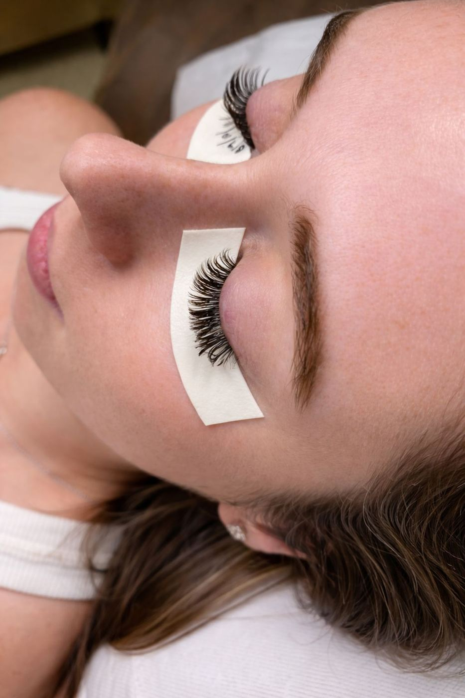

Every lash, by hand
Alyssa builds each set lash by lash, shaped to your eyes.


Kind words
“I’ve been getting my lashes done for seven years, and after moving to Pensacola, I can confidently say that Alyssa is the best lash artist in the area—and the best I’ve ever had. I’ve had the…”
“Alyssa does the most beautiful lashes! I’ve been seeing her for two years and she nails it every single visit! I always receive compliments from strangers about how natural my lashes look (I get…”
“Alyssa is an absolute lash magician! ⭐⭐⭐⭐⭐ Her sweet personality adds a personal touch to every appointment, turning it into a delightful catch-up with a friend. Trust me, there's no one else I'd…”